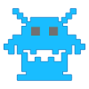
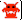

Обозначения.
| Игрок | |
| Робот | |
|  | Быстрый робот |
| Куча | |
| Телепортация | |
| Безопасная телепортация | |
| Мина-ловушка | |
| Взрыв бомбы | |
| Счёт | |
| Энергия | |
|  | Количество роботов |
Что к чему.
Если вы сильно умный, можете просто пропустить этy часть. Но мы бы вам не советовали этого делать, потому что знание всех правил игры ещё никому не навредило.
Телепорт - простое перемещение по полю. Используя телепорт вы однажды можете попасть в зону действия робота. Там и умрёте.
Безопасный телепорт - перемещение за 1 очко энергии. Вы окажетесь на клетке, на которой сейчас робот вас точно не достанет. Но не факт, что на следующий ход после телепорта он не окажется рядом с вами.
Ловушки - оставляете эту штуку на клетке и заманиваете на неё робота. Тратится 3 очка энергии. Попадётесь на неё сами - мы не виноваты.
Бомбы - большой бабах вокруг игрока; стоимость показана на кнопке и зависит от количества врагов поблизости.
Что ещё?
При столкновении робота с роботом образуется куча. При столкновении робота и кучи остаётся куча. Кучи можно толкать на роботов. Очень даже нужно. А можно просто встать за кучу и стоять там.
Куда идти?
На все четыре стороны. И ещё по диагонали. Или на месте стоять. Тоже полезно бывает.
Будьте внимательны! Игра достаточно бесконечна. Выиграть можно (теоретически), но очень сложно. Однако довольно просто повысить самооценку за счёт большего количества очков, чем у ваших друзей.